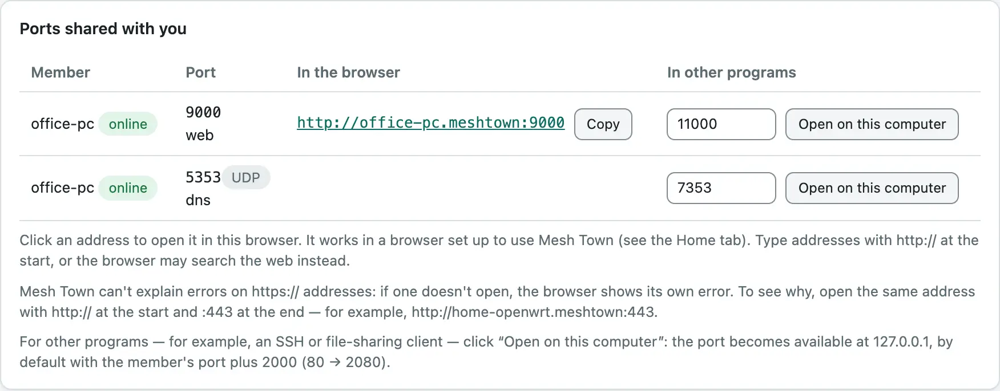
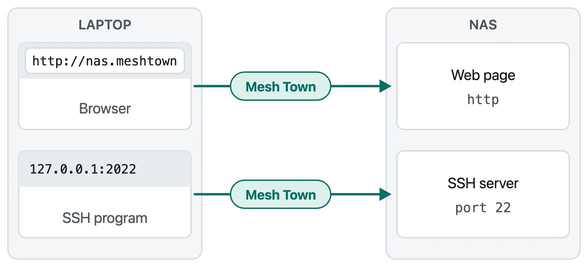

Open your devices
Open a program on another device in your network by its name: a web page, SSH, remote desktop or a file share.
Which device will you open it from?
-
Open a web page
Windows and macOS
On your computer, open the Mesh Town page → Networks → your network → Shared services (ports). The list Ports shared with you shows what other members share with you. For a device with a web page, click its address, for example
http://nas.meshtown.
Screenshot: Ports shared with you with an address and Open on this computer When you type an address yourself, start it with http://, not https://.
Android
When Mesh Town is connected, type the address in any browser on the phone, for example
http://nas.meshtown. You do not need to set up the browser: all of the phone's internet traffic goes through the app.To see which ports are shared with you, open http://meshtown/ in the phone's browser.
-
Open it in another program
In the same list, click Open on this computer next to the port. The program then works on your computer at
127.0.0.1: for example, port 22 becomes127.0.0.1:2022. Connect your program to that address.
Diagram: The address http://nas.meshtown in a browser and 127.0.0.1:2022 for SSH


Your devices are open
- Open http://meshtown/ on any of your devices: it lists the ports shared with you.
Add another device → Invite someone → Update, remove, fix problems →